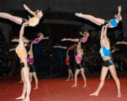

Занятие акробатикой – один из лучших способов для развития координации, ловкости, смелости, а также подвижности суставов, силы и выносливости, культуры движения и пластики, умения владеть своим телом.
В акробатической секции большое внимание уделяется обучению детей самостраховки, что в свою очередь, необходимо каждому ребенку.
В результате занятий акробатикой увеличивается двигательный опыт. С занятиями акробатикой возможности человеческого тела безгранично (но постепенно) расширяются.
Если Вы хотите, чтобы тело Вашего ребенка развивалось гармонично, чтобы Ваш ребенок стал более открытым и веселым, скорее приводите его на занятия акробатикой!
Желательно, чтобы тренировки проходили 3 раза в неделю по часу. В программу физического развития юных акробатов включены элементы прыжковой акробатики, спортивной гимнастики и хореографии. Кроме этого дети принимают участие в соревнованиях, что с ранних лет воспитывает у детей стремление к победе, ориентированность работы на результат, концентрацию внимания и другие важные качества, которые пригодятся Вашему чаду во взрослой жизни.

{kind=link}